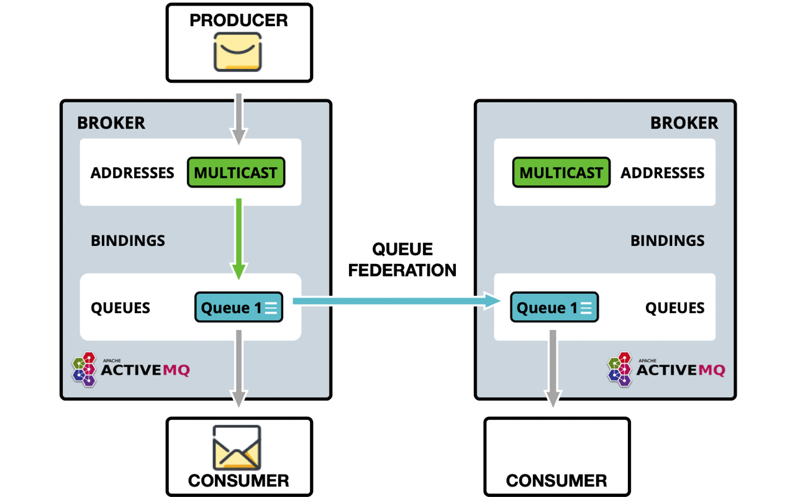

Queue Federation
Introduction
This feature provides a way of balancing the load of a single queue across remote brokers.
A federated queue links to other queues (called upstream queues). It will retrieve messages from upstream queues in order to satisfy demand for messages from local consumers. The upstream queues do not need to be reconfigured and they do not have to be on the same broker or in the same cluster.
All of the configuration needed to establish the upstream links and the federated queue is in the downstream broker.
Use Cases
This is not an exhaustive list of what you can do with and the benefits of federated queues, but simply some ideas.
Higher capacity
By having a "logical" queue distributed over many brokers. Each broker would declare a federated queue with all the other federated queues upstream. (The links would form a complete bi-directional graph on n queues.)
By having this a logical distributed queue is capable of having a much higher capacity than a single queue on a single broker. When will perform best when there is some degree of locality.
e.g. as many messages as possible are consumed from the same broker as they were published to, where federation only needs to move messages around in order to perform load balancing.

Supporting multi region or venue
In a multi region setup you may have producers in one region or venue and the consumer in another. typically you want producers and consumer to keep their connections local to the region, in such as case you can deploy brokers in each region where producers and consumer are, and use federation to move messages over the WAN between regions.

Communication between the secure enterprise lan and the DMZ.
Where a number of producer apps maybe in the DMZ and a number of consumer apps in the secure enterprise lan, it may not suitable to allow the producers to connect through to the broker in the secure enterprise lan.
In this scenario you could deploy a broker in the DMZ where the producers publish to, and then have the broker in the enterprise lan connect out to the DMZ broker and federate the queues so that messages can traverse.
This is similar to supporting multi region or venue.
- Migrating between two clusters.
Consumers and publishers can be moved in any order and the messages won't be duplicated (which is the case if you do exchange federation). Instead, messages are transferred to the new cluster when your consumers are there.
Here for such a migration with blue/green or canary moving a number of consumers on the same queue, you may want to set the
priority-adjustmentto 0, or even a positive value, so message would actively flow to the federated queue.
Configuring Queue Federation
Federation is configured in broker.xml.
Sample Queue Federation setup:
<federations>
<federation name="eu-north-1" user="federation_username" password="32a10275cf4ab4e9">
<upstream name="eu-east-1">
<static-connectors>
<connector-ref>eu-east-connector1</connector-ref>
<connector-ref>eu-east-connector1</connector-ref>
</static-connectors>
<policy ref="news-queue-federation"/>
</upstream>
<upstream name="eu-west-1" >
<static-connectors>
<connector-ref>eu-west-connector1</connector-ref>
<connector-ref>eu-west-connector1</connector-ref>
</static-connectors>
<policy ref="news-queue-federation"/>
</upstream>
<queue-policy name="news-queue-federation" priority-adjustment="-5" include-federated="true" transformer-ref="federation-transformer-3">
<include queue-match="#" address-match="queue.bbc.new" />
<include queue-match="#" address-match="queue.usatoday" />
<include queue-match="#" address-match="queue.news.#" />
<exclude queue-match="#.local" address-match="#" />
</queue-policy>
<transformer name="news-transformer">
<class-name>org.foo.NewsTransformer</class-name>
<property key="key1" value="value1"/>
<property key="key2" value="value2"/>
</transformer>
</federation>
</federations>
In the above setup downstream broker eu-north-1 is configured to connect to two upstream brokers eu-east-1 and eu-east-2, the credentials used for both connections to both brokers in this sample are shared, you can set user and password at the upstream level should they be different per upstream.
Both upstreams are configured with the same queue-policy news-queue-federation, that is selecting addresses which match any of the include criteria, but will exclude any queues that end with .local, keeping these as local queues only.
It is important that federation name is globally unique.
Let's take a look at all the queue-policy parameters in turn, in order of priority.
nameattribute. All address-policies must have a unique name in the server.includethe address-match pattern to whitelist addresses, multiple of these can be set. If none are set all addresses are matched.excludethe address-match pattern to blacklist addresses, multiple of these can be set.priority-adjustmentwhen a consumer attaches its priority is used to make the upstream consumer, but with an adjustment by default -1, so that local consumers get load balanced first over remote, this enables this to be configurable should it be wanted/needed.include-federatedby default this is false, we don't federate a federated consumer, this is to avoid issue, where in symmetric or any closed loop setup you could end up when no "real" consumers attached with messages flowing round and round endlessly.There is though a valid case that if you dont have a close loop setup e.g. three brokers in a chain (A->B->C) with producer at broker A and consumer at C, you would want broker B to re-federate the consumer onto A.
transformer-ref. The ref name for a transformer (see transformer config) that you may wish to configure to transform the message on federation transfer.
note address-policy's and queue-policy's are able to be defined in the same federation, and be linked to the same upstream.
Now look at all the transformer parameters in turn, in order of priority:
nameattribute. This must be a unique name in the server, and is used to ref the transformer inaddress-policyandqueue-policytransformer-class-name. An optional transformer-class-name can be specified. This is the name of a user-defined class which implements theorg.apache.activemq.artemis.core.server.transformer.Transformerinterface.If this is specified then the transformer's
transform()method will be invoked with the message before it is transferred. This gives you the opportunity to transform the message's header or body before it is federated.propertyholds key, value pairs that can be used to configure the transformer.
Finally look at upstream, this is what defines the upstream broker connection and the policies to use against it.
nameattribute. This must be a unique name in the server, and is used to ref the transformer inaddress-policyandqueue-policyuser. This optional attribute determines the user name to use when creating the upstream connection to the remote server. If it is not specified the shared federation user and password will be used if set.password. This optional attribute determines the password to use when creating the upstream connection to the remote server. If it is not specified the shared federation user and password will be used if set.static-connectorsordiscovery-group-ref. Pick either of these options to connect the bridge to the target server.The
static-connectorsis a list ofconnector-refelements pointing toconnectorelements defined elsewhere. A connector encapsulates knowledge of what transport to use (TCP, SSL, HTTP etc) as well as the server connection parameters (host, port etc). For more information about what connectors are and how to configure them, please see Configuring the Transport.The
discovery-group-refelement has one attribute -discovery-group-name. This attribute points to adiscovery-groupdefined elsewhere. For more information about what discovery-groups are and how to configure them, please see Discovery Groups.ha. This optional parameter determines whether or not this bridge should support high availability. True means it will connect to any available server in a cluster and support failover. The default value isfalse.circuit-breaker-timeoutin milliseconds, When a connection issue occurs, as the single connection is shared by many federated queue and address consumers, to avoid each one trying to reconnect and possibly causing a thrundering heard issue, the first one will try, if unsuccessful the circuit breaker will open, returning the same exception to all, this is the timeout until the circuit can be closed and connection retried.share-connection. If there is a downstream and upstream connection configured for the same broker then the same connection will be shared as long as both stream configs set this flag to true. Default is false.check-period. The period (in milliseconds) used to check if the federation connection has failed to receive pings from another server. Default is 30000.connection-ttl. This is how long a federation connection should stay alive if it stops receiving messages from the remote broker. Default is 60000.call-timeout. When a packet is sent via a federation connection and is a blocking call, i.e. for acknowledgements, this is how long it will wait (in milliseconds) for the reply before throwing an exception. Default is 30000.call-failover-timeout. Similar tocall-timeoutbut used when a call is made during a failover attempt. Default is -1 (no timeout).retry-interval. This optional parameter determines the period in milliseconds between subsequent reconnection attempts, if the connection to the target server has failed. The default value is500milliseconds.retry-interval-multiplier. This is a multiplier used to increase theretry-intervalafter each reconnect attempt, default is 1.max-retry-interval. The maximum delay (in milliseconds) for retries. Default is 2000.initial-connect-attempts. The number of times the system will try to connect to the remote broker in the federation. If the max-retry is achieved this broker will be considered permanently down and the system will not route messages to this broker. Default is -1 (infinite retries).reconnect-attempts. The number of times the system will try to reconnect to the remote broker in the federation. If the max-retry is achieved this broker will be considered permanently down and the system will stop routing messages to this broker. Default is -1 (infinite retries).
Configuring Downstream Federation
Similarly to upstream configuration, a downstream configuration can be configured. This works by sending a command
to the downstream broker to have it create an upstream connection back to the downstream broker. The benefit of
this is being able to configure everything for federation on one broker in some cases to make it easier, such
as a hub and spoke topology.
All of the same configuration options apply to downstream as does upstream with the exception of one
extra configuration flag that needs to be set:
The upstream-connector-ref is an element pointing to a
connector elements defined elsewhere. This ref is used to tell the downstream broker
what connector to use to create a new upstream connection back to the downstream broker.
A connector encapsulates knowledge of what transport to use (TCP, SSL, HTTP etc) as well as the server connection parameters (host, port etc). For more information about what connectors are and how to configure them, please see Configuring the Transport.
Sample Downstream Address Federation setup:
<!--Other config Here -->
<connectors>
<connector name="netty-connector">tcp://localhost:61616</connector>
<connector name="eu-west-1-connector">tcp://localhost:61616</connector>
<connector name="eu-east-1-connector">tcp://localhost:61617</connector>
</connectors>
<acceptors>
<acceptor name="netty-acceptor">tcp://localhost:61616</acceptor>
</acceptors>
<!--Other config Here -->
<federations>
<federation name="eu-north-1" user="federation_username" password="32a10275cf4ab4e9">
<downstream name="eu-east-1">
<static-connectors>
<connector-ref>eu-east-connector1</connector-ref>
</static-connectors>
<upstream-connector-ref>netty-connector</upstream-connector-ref>
<policy ref="news-address-federation"/>
</downstream>
<downstream name="eu-west-1" >
<static-connectors>
<connector-ref>eu-west-connector1</connector-ref>
</static-connectors>
<upstream-connector-ref>netty-connector</upstream-connector-ref>
<policy ref="news-address-federation"/>
</downstream>
<queue-policy name="news-queue-federation" priority-adjustment="-5" include-federated="true" transformer-ref="federation-transformer-3">
<include queue-match="#" address-match="queue.bbc.new" />
<include queue-match="#" address-match="queue.usatoday" />
<include queue-match="#" address-match="queue.news.#" />
<exclude queue-match="#.local" address-match="#" />
</queue-policy>
<transformer name="news-transformer">
<class-name>org.foo.NewsTransformer</class-name>
<property key="key1" value="value1"/>
<property key="key2" value="value2"/>
</transformer>
</federation>
</federations>